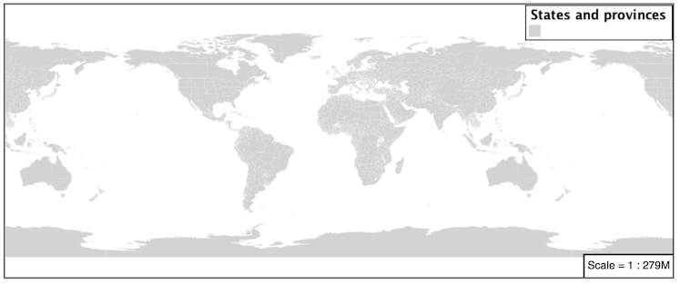
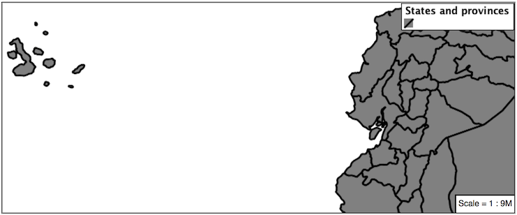
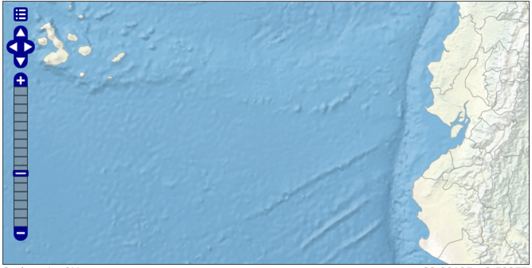
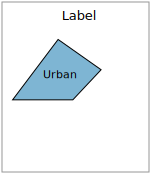
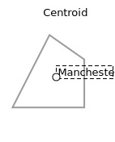
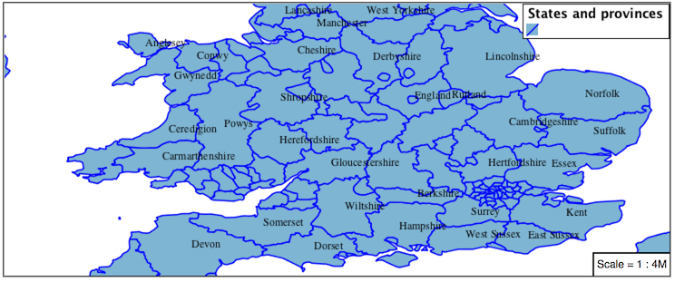
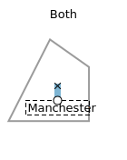
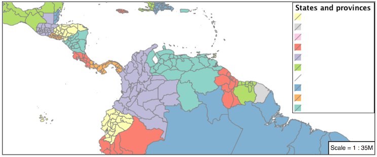
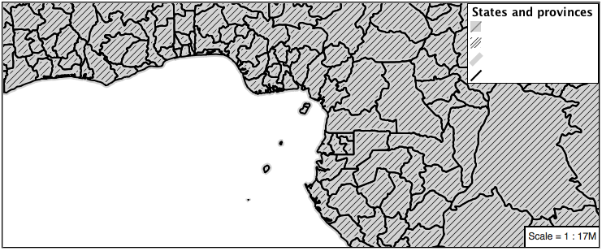

5.3. Polygons¶
Next we look at how MBStyle styling can be used to represent polygons.
Polygon Geometry¶
Review of polygon symbology:
Polygons offer a direct representation of physical extent or the output of analysis.
The visual appearance of polygons reflects the current scale.
Polygons are recorded as a LinearRing describing the polygon boundary. Further LinearRings can be used to describe any holes in the polygon if present.
The Simple Feature for SQL Geometry model (used by GeoJSON) represents these areas as Polygons, the ISO 19107 geometry model (used by GML3) represents these areas as Surfaces.
SLD uses a PolygonSymbolizer to describe how the shape of a polygon is drawn. The primary characteristic documented is the Fill used to shade the polygon interior. The use of a Stroke to describe the polygon boundary is optional.
Labeling of a polygon is anchored to the centroid of the polygon. GeoServer provides a vendor-option to allow labels to line wrap to remain within the polygon boundaries.
For our Polygon exercises we will try and limit our MBStyle documents to a single rule, in order to showcase the properties used for rendering.
Reference:
Polygons (User Manual | SLD Reference )
This exercise makes use of the ne:states_provinces_shp layer.
Navigate to .
Create a new style polygon_example.
Name:
polygon_example
Workspace:
No workspace
Format:
MBStyle
Enter the following style and click :menuselection:
Applyto save:{ "version": 8, "name": "polygon_example", "layers": [ { "id": "polygon_example", "source-layer": "ne:states_provinces_shp", "type": "fill", "paint": { "fill-color": "lightgrey" } } ] }
Click on the tab Layer Preview to preview.
Set
ne:states_provinces_shpas the preview layer.
5.3.1. Fill and Outline¶
The fill layer controls the display of polygon data.

The fill-color property is used to provide the color used to draw the interior of a polygon.
Replace the contents of
polygon_examplewith the following fill example:{ "version": 8, "name": "polygon_example", "layers": [ { "id": "polygon_example", "source-layer": "ne:states_provinces_shp", "type": "fill", "paint": { "fill-color": "gray" } } ] }
The Map tab can be used preview the change:

To draw the boundary of the polygon the fill-outline property is used:
The fill-outline property is used to provide the color of the polygon boundary. For more advanced boundary styling, use a seperate line layer.
{ "version": 8, "name": "polygon_example", "layers": [ { "id": "polygon_example", "source-layer": "ne:states_provinces_shp", "type": "fill", "paint": { "fill-color": "gray", "fill-outline-color": "black" } } ] }
Note
Technically the boundary of a polygon is a specific case of a LineString where the first and last vertex are the same, forming a closed LinearRing.
The effect of adding fill-outline is shown in the map preview:
An interesting technique when styling polygons in conjunction with background information is to control the fill opacity.
The fill-opacity property is used to adjust transparency (provided as range from 0.0 to 1.0). Use of fill-opacity to render polygons works well in conjunction with a raster base map. This approach allows details of the base map to shown through. fill-opacity affects both the fill and the fill outline.
The stroke-opacity property is used in a similar fashion, as a range from 0.0 to 1.0.
{ "version": 8, "name": "polygon_example", "layers": [ { "id": "polygon_example", "source-layer": "ne:states_provinces_shp", "type": "fill", "paint": { "fill-opacity": 0.5, "fill-color": "white", "fill-outline-color": "lightgrey" } } ] }
As shown in the map preview:
This effect can be better appreciated using a layer group.

Where the transparent polygons is used lighten the landscape provided by the base map.

5.3.2. Pattern¶
The fill-pattern property can be used to provide a pattern.

The fill pattern is defined by repeating an image defined in a spritesheet.
Update polygon_example with the following sprite as a repeating fill pattern:
{ "version": 8, "name": "polygon_example", "sprite": "http://localhost:8080/geoserver/styles/sprites" "layers": [ { "id": "polygon_example", "source-layer": "ne:states_provinces_shp", "type": "fill", "paint": { "fill-pattern": "grey_square16" } } ] }
The map preview (and legend) will show the result:
You can view the names of all the icons in the spritesheet by looking at its json definition, at http://localhost:8080/geoserver/styles/sprites.json.
{ "white_square16": { "height": 16, "pixelRatio": 1, "width": 16, "x": 1, "y": 1 }, "grey_square8": { "height": 8, "pixelRatio": 1, "width": 8, "x": 24, "y": 18 }, "grey_square16": { "height": 16, "pixelRatio": 1, "width": 16, "x": 18, "y": 1 }, "grey_square22": { "height": 22, "pixelRatio": 1, "width": 22, "x": 1, "y": 18 }, "green_square16": { "height": 16, "pixelRatio": 1, "width": 16, "x": 35, "y": 1 }, "grey_x": { "height": 30, "pixelRatio": 1, "width": 30, "x": 1, "y": 41 }, "grey_diag8": { "height": 8, "pixelRatio": 1, "width": 8, "x": 24, "y": 27 }, "grey_diag16": { "height": 16, "pixelRatio": 1, "width": 16, "x": 35, "y": 18 }, "grey_circle": { "height": 17, "pixelRatio": 1, "width": 17, "x": 36, "y": 36 }, "airport": { "height": 16, "pixelRatio": 1, "width": 16, "x": 52, "y": 18 }, "port": { "height": 16, "pixelRatio": 1, "width": 16, "x": 52, "y": 1 }, "star": { "height": 16, "pixelRatio": 1, "width": 16, "x": 69, "y": 1 } }
Update the example to use grey_diag16 for a pattern of left hatching.
{ "version": 8, "name": "polygon_example", "sprite": "http://localhost:8080/geoserver/styles/sprites" "layers": [ { "id": "polygon_example", "source-layer": "ne:states_provinces_shp", "type": "fill", "paint": { "fill-pattern": "grey_diag16" } } ] }
This approach is well suited to printed output or low color devices.

Multiple fills can be applied by using a seperate layer for each fill.
{ "version": 8, "name": "polygon_example", "sprite": "http://localhost:8080/geoserver/styles/sprites" "layers": [ { "id": "polygon_background", "source-layer": "ne:states_provinces_shp", "type": "fill", "paint": { "fill-color": "#DDDDFF", "fill-outline-color": "black" } }, { "id": "polygon_pattern", "source-layer": "ne:states_provinces_shp", "type": "fill", "paint": { "fill-pattern": "grey_diag8" } } ] }
The resulting image has a solid fill, with a pattern drawn overtop.
5.3.3. Label¶
Labeling polygons follows the same approach used for LineStrings.
By default labels are drawn starting at the centroid of each polygon.
Try out text-field and text-color by replacing our
polygon_examplewith the following:{ "version": 8, "name": "polygon_example", "layers": [ { "id": "polygon_fill", "source-layer": "ne:states_provinces_shp", "type": "fill", "paint": { "fill-color": "#7EB5D3", "fill-outline-color": "blue" } }, { "id": "polygon_label", "source-layer": "ne:states_provinces_shp", "type": "symbol", "layout": { "text-field": "{name}" }, "paint": { "text-color": "black" } } ] }
Each label is drawn from the lower-left corner as shown in the
Mappreview.We can adjust how the label is drawn at the polygon centroid.

The property text-anchor provides two numbers expressing how a label is aligned with respect to the centroid. Adjusting the text-anchor is the recommended approach to positioning your labels.
Using the text-anchor property we can center our labels with respect to geometry centroid.
To align the center of our label we select “center” below:
{ "version": 8, "name": "polygon_example", "layers": [ { "id": "polygon_fill", "source-layer": "ne:states_provinces_shp", "type": "fill", "paint": { "fill-color": "#7EB5D3", "fill-outline-color": "blue" } }, { "id": "polygon_label", "source-layer": "ne:states_provinces_shp", "type": "symbol", "layout": { "text-field": "{name}", "text-anchor": "center" }, "paint": { "text-color": "black" } } ] }
The labeling position remains at the polygon centroid. We adjust alignment by controlling which part of the label we are “snapping” into position.
The property text-translate can be used to provide an initial displacement using and x and y offset.

This offset is used to adjust the label position relative to the geometry centroid resulting in the starting label position.
{ "version": 8, "name": "polygon_example", "layers": [ { "id": "polygon_fill", "source-layer": "ne:states_provinces_shp", "type": "fill", "paint": { "fill-color": "#7EB5D3", "fill-outline-color": "blue" } }, { "id": "polygon_label", "source-layer": "ne:states_provinces_shp", "type": "symbol", "layout": { "text-field": "{name}", }, "paint": { "text-color": "black", "text-translate": [0, -7] } } ] }
Confirm this result in the map preview.

These two settings can be used together.
The rendering engine starts by determining the label position generated from the geometry centroid and the text-translate displacement. The bounding box of the label is used with the text-anchor setting align the label to this location.
Step 1: starting label position = centroid + displacement
Step 2: snap the label anchor to the starting label position
To move our labels down (allowing readers to focus on each shape) we can use displacement combined with followed by horizontal alignment.
{ "version": 8, "name": "polygon_example", "layers": [ { "id": "polygon_fill", "source-layer": "ne:states_provinces_shp", "type": "fill", "paint": { "fill-color": "#7EB5D3", "fill-outline-color": "blue" } }, { "id": "polygon_label", "source-layer": "ne:states_provinces_shp", "type": "symbol", "layout": { "text-field": "{name}", "text-anchor": "left" }, "paint": { "text-color": "black", "text-translate": [0, -7] } } ] }
As shown in the map preview.

5.3.4. Legibility¶
When working with labels a map can become busy very quickly, and difficult to read.
MBStyle extensive proterties for controlling the labelling process.
One common property for controlling labeling is text-max-width, which allows any labels extending past the provided width will be wrapped into multiple lines.
Using this we can make a small improvement in our example:
{ "version": 8, "name": "polygon_example", "layers": [ { "id": "polygon_fill", "source-layer": "ne:states_provinces_shp", "type": "fill", "paint": { "fill-color": "#7EB5D3", "fill-outline-color": "blue" } }, { "id": "polygon_label", "source-layer": "ne:states_provinces_shp", "type": "symbol", "layout": { "text-field": "{name}", "text-anchor": "center" "text-max-width": 14 }, "paint": { "text-color": "black", } } ] }
As shown in the following preview.

Even with this improved spacing between labels, it is difficult to read the result against the complicated line work.
Use of a halo to outline labels allows the text to stand out from an otherwise busy background. In this case we will make use of the fill color, to provide some space around our labels. We will also change the font to Arial.
{ "version": 8, "name": "polygon_example", "layers": [ { "id": "polygon_fill", "source-layer": "ne:states_provinces_shp", "type": "fill", "paint": { "fill-color": "#7EB5D3", "fill-outline-color": "blue" } }, { "id": "polygon_label", "source-layer": "ne:states_provinces_shp", "type": "symbol", "layout": { "text-field": "{name}", "text-anchor": "center" "text-max-width": 14, "text-font": ["Arial"] }, "paint": { "text-color": "black", "text-halo-color": "#7EB5D3", "text-halo-width": 2 } } ] }

5.3.5. Theme¶
A thematic map (rather than focusing on representing the shape of the world) uses elements of style to illustrate differences in the data under study. This section is a little more advanced and we will take the time to look at the generated SLD file.
We can use a site like ColorBrewer to explore the use of color theming for polygon symbology. In this approach the the fill color of the polygon is determined by the value of the attribute under study.

This presentation of a dataset is known as “theming” by an attribute.
For our
ne:states_provinces_shpdataset, a mapcolor9 attribute has been provided for this purpose. Theming by mapcolor9 results in a map where neighbouring countries are visually distinct.Qualitative 9-class Set3
#8dd3c7
#fb8072
#b3de69
#ffffb3
#80b1d3
#fccde5
#bebada
#fdb462
#d9d9d9
If you are unfamiliar with theming you may wish to visit http://colorbrewer2.org to learn more. The i icons provide an adequate background on theming approaches for qualitative, sequential and diverging datasets.
The first approach we will take is to directly select content based on colormap, providing a color based on the 9-class Set3 palette above:
{ "version": 8, "name": "polygon_example", "layers": [ { "id": "polygon_1", "filter": ["==", "mapcolor9", 1], "source-layer": "ne:states_provinces_shp", "type": "fill", "paint": { "fill-color": "#8DD3C7", "fill-outline-color": "gray" } }, { "id": "polygon_2", "filter": ["==", "mapcolor9", 2], "source-layer": "ne:states_provinces_shp", "type": "fill", "paint": { "fill-color": "#FFFFB3", "fill-outline-color": "gray" } }, { "id": "polygon_3", "filter": ["==", "mapcolor9", 3], "source-layer": "ne:states_provinces_shp", "type": "fill", "paint": { "fill-color": "#BEBADA", "fill-outline-color": "gray" } }, { "id": "polygon_4", "filter": ["==", "mapcolor9", 4], "source-layer": "ne:states_provinces_shp", "type": "fill", "paint": { "fill-color": "#FB8072", "fill-outline-color": "gray" } }, { "id": "polygon_5", "filter": ["==", "mapcolor9", 5], "source-layer": "ne:states_provinces_shp", "type": "fill", "paint": { "fill-color": "#80B1D3", "fill-outline-color": "gray" } }, { "id": "polygon_6", "filter": ["==", "mapcolor9", 6], "source-layer": "ne:states_provinces_shp", "type": "fill", "paint": { "fill-color": "#FDB462", "fill-outline-color": "gray" } }, { "id": "polygon_7", "filter": ["==", "mapcolor9", 7], "source-layer": "ne:states_provinces_shp", "type": "fill", "paint": { "fill-color": "#B3DE69", "fill-outline-color": "gray" } }, { "id": "polygon_8", "filter": ["==", "mapcolor9", 8], "source-layer": "ne:states_provinces_shp", "type": "fill", "paint": { "fill-color": "#FCCDE5", "fill-outline-color": "gray" } }, { "id": "polygon_9", "filter": ["==", "mapcolor9", 9], "source-layer": "ne:states_provinces_shp", "type": "fill", "paint": { "fill-color": "#D9D9D9", "fill-outline-color": "gray" } } ] }
The Map tab can be used to preview this result.
Property functions can be used to make theming substantially easier, by directly mapping property values to style values using an array of stops. MBStyle supports three types of function interpolation, which is used to define the behavior between these stops:
categorical: Used the theme qualitative data. Attribute values are directly mapped to styling property such as fill or stroke-width. Equvalent to the SLD Recode function.
interval: Used the theme quantitative data. Categories are defined using min and max ranges, and values are sorted into the appropriate category. Equvalent to the SLD Categorize function.
exponential: Used to smoothly theme quantitative data by calculating a styling property based on an attribute value. Supports a base attribute for controlling the steepness of interpolation. When base is 1, this is equivalent to the SLD Interpolate function.
Theming is an activity, producing a visual result allow map readers to learn more about how an attribute is distributed spatially. We are free to produce this visual in the most efficient way possible.
Swap out mapcolor9 theme to use the categorical function:
{ "version": 8, "name": "polygon_example", "layers": [ { "id": "polygon", "source-layer": "ne:states_provinces_shp", "type": "fill", "paint": { "fill-color": { "property": "mapcolor9", "type": "categorical", "stops": [ [1, "#8dd3c7"], [2, "#ffffb3"], [3, "#bebada"], [4, "#fb8072"], [5, "#80b1d3"], [6, "#fdb462"], [7, "#b3de69"], [8, "#fccde5"], [9, "#d9d9d9"] ] }, "fill-outline-color": "gray" } } ] }
The Map tab provides the same preview.

The Generated SLD tab shows where things get interesting. Our generated style now consists of a single Rule:
<sld:Rule> <sld:PolygonSymbolizer> <sld:Fill> <sld:CssParameter name="fill"> <ogc:Function name="Recode"> <ogc:PropertyName>mapcolor9</ogc:PropertyName> <ogc:Literal>1</ogc:Literal> <ogc:Literal>#8dd3c7</ogc:Literal> <ogc:Literal>2</ogc:Literal> <ogc:Literal>#ffffb3</ogc:Literal> <ogc:Literal>3</ogc:Literal> <ogc:Literal>#bebada</ogc:Literal> <ogc:Literal>4</ogc:Literal> <ogc:Literal>#fb8072</ogc:Literal> <ogc:Literal>5</ogc:Literal> <ogc:Literal>#80b1d3</ogc:Literal> <ogc:Literal>6</ogc:Literal> <ogc:Literal>#fdb462</ogc:Literal> <ogc:Literal>7</ogc:Literal> <ogc:Literal>#b3de69</ogc:Literal> <ogc:Literal>8</ogc:Literal> <ogc:Literal>#fccde5</ogc:Literal> <ogc:Literal>9</ogc:Literal> <ogc:Literal>#d9d9d9</ogc:Literal> </ogc:Function> </sld:CssParameter> </sld:Fill> </sld:PolygonSymbolizer> <sld:LineSymbolizer> <sld:Stroke> <sld:CssParameter name="stroke">#808080</sld:CssParameter> <sld:CssParameter name="stroke-width">0.5</sld:CssParameter> </sld:Stroke> </sld:LineSymbolizer> </sld:Rule>
5.3.6. Bonus¶
The following optional explore and challenge activities offer a chance to review and apply the ideas introduced here. The challenge activities equire a bit of creativity and research to complete.
In a classroom setting you are encouraged to team up into groups, with each group taking on a different challenge.
5.3.6.1. Explore Interval¶
The interval function can be used to generate property values based on quantitative information. Here is an example using interval to color states according to size.
{ "version": 8, "name": "polygon_example", "layers": [ { "id": "polygon", "source-layer": "ne:states_provinces_shp", "type": "fill", "paint": { "fill-color": { "property": "Shape_Area", "type": "interval", "stops": [ [0, "#08519c"], [0.5, "#3182bd"], [1, "#6baed6"], [5, "#9ecae1"], [60, "#c6dbef"], [80, "#eff3ff"] ] } } } ] }

An exciting use of the GeoServer shape symbols is the theming by changing the size used for pattern density.
Explore: Use the interval function to theme by datarank.

Note
Answer provided at the end of the workbook.
5.3.6.2. Challenge Halo¶
The halo example used the fill color and opacity for a muted halo, while this improved readability it did not bring attention to our labels.
A common design choice for emphasis is to outline the text in a contrasting color.
Challenge: Produce a map that uses a white halo around black text.
Note
Answer provided at the end of the workbook.
5.3.6.3. Challenge Theming using Multiple Attributes¶
A powerful tool is theming using multiple attributes. This is an important concept allowing map readers to perform “integration by eyeball” (detecting correlations between attribute values information).
Challenge: Combine the mapcolor9 and datarank examples to reproduce the following map.

Note
Answer provided at the end of the workbook.
5.3.6.4. Challenge Use of Z-Index¶
Earlier we looked at using multiple layers to simulate line string casing. The line work was drawn twice, once with thick line, and then a second time with a thinner line. The resulting effect is similar to text halos - providing breathing space around complex line work allowing it to stand out.
Challenge: Use what you know of rendering order to reproduce the following map:
Note
Answer provided at the end of the workbook.